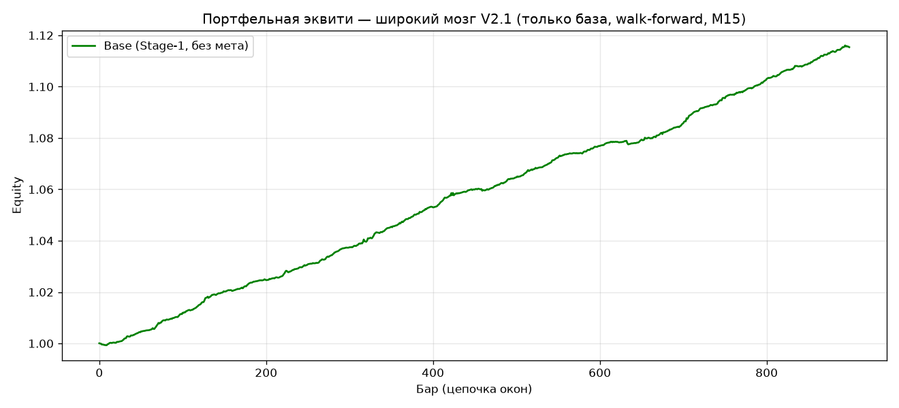

Портфельный «широкий мозг» на 10 валютных парах и 4 таймфреймах. Честная walk-forward симуляция на исторических данных без терминала. Эта версия — абляция: убраны кросс-активные «головы» (Stage 2) и мета-контроллер риска. Оставлена только база.
только база · Stage-1 · scale = 1 · без метаРешения принимаются на сетке M15. Младшие/старшие ТФ
(M30, H1, H4) не торгуются отдельно — они лишь подшиваются к M15-бару как контекстные фичи.
Скрипт download_data.py один раз скачивает 10 пар × 4 таймфрейма в data/
(40 CSV, по ~14950 M15-баров). Для каждой пары старшие ТФ выравниваются на M15-сетку
форвард-заполнением — берётся последний уже закрытый старший бар ≤ текущего M15.
Никакой утечки будущего.
# выравнивание H1/H4 на M15-бары (по времени) pos = np.searchsorted(t2, t_base, side="right") - 1 pos = np.clip(pos, 0, len(t2) - 1) fM15 = np.concatenate([fM15, f2[pos]], axis=1)
11 причинно-чистых фичей на каждый ТФ, нормируются по паре на train-статистике:
rsi_14 · macd · mom_6 / mom_12 / mom_24 ·
atr_14 · ma_20 / ma_50 · body · hl_range · vol_ratio
Цена сглаживается Гауссовым фильтром, берётся производная, и метка — пойдёт ли сглаженная цена вверх:
sm = gaussian_filter1d(close, SIGMA, mode="reflect") y = (np.gradient(sm) > 0).astype(int) # 1 = вверх, 0 = вниз
Центрированный Гаусс «знает будущее» — это допустимо: метка-учитель может смотреть вперёд.
На входе модели в баре t только прошлое, поэтому решение честное.
Для пары P обучается свой LightGBM на её собственных мульти-ТФ фичах
по окну [0, BARS_TRAIN). Классы балансируются весами
(sample_weight = n_neg/n_pos). Предсказывает вероятность «вверх».
sig = (proba > 0.5).astype(int) * 2 - 1 # +1 (BUY) или −1 (SELL), нейтрали нет
Нейтральной зоны нет: система всегда в позиции, сигнал переворачивается, когда вероятность перепрыгивает порог 0.5.
В каждом M15-баре позиция по паре = signal × scale, где scale = 1
(риск-контроллер в V2.1 отключён). Доходность фиксируется на следующем закрытии:
ret = close[t+1]/close[t] − 1. Портфельная доходность бара — среднее по 10 парам.
Окно обучения расширяется, тест «прокручивается» блоками FOLD баров.
# решение на баре t, реализация t → t+1 pr = np.mean(sig_test[t] * ret_test[t]) # равновес, scale = 1 eq = np.cumprod(1 + pr_all)
| Версия | Внутри | Доходность | Просадка |
|---|---|---|---|
| V2.1 (здесь) | Stage-1, без мета | 50.7% | −0.2% |
| V2 «Base» | Stage-2 (головы) + scale 1 | 47.7% | −0.2% |
| V2 «Wide» | Stage-2 + risk-off мета | 15.5% | −0.1% |
| V2-super-base | одна пара EURUSD M15 | 0.46% | −1.86% |

SIGMA = 1.5 # сглаживание цели BASE_TF = "M15" HIGHER = ["M30","H1","H4"] BARS_TRAIN = 10000 # размер обучения FOLD = 900 # шаг теста N_FOLDS = None # сколько окон NORM = True PAIRS = None # все 10
download_data.py — выгрузка оффлайн-данныхwide_brainV2.1.py — сама система (база)data/*.csv — 40 файлов котировокwide_equity_base.png — график эквитисистема-в-единм-файле-QWEN6.py — источник фичей/моделиЗапуск: .venv\Scripts\python.exe wide_brainV2.1.py